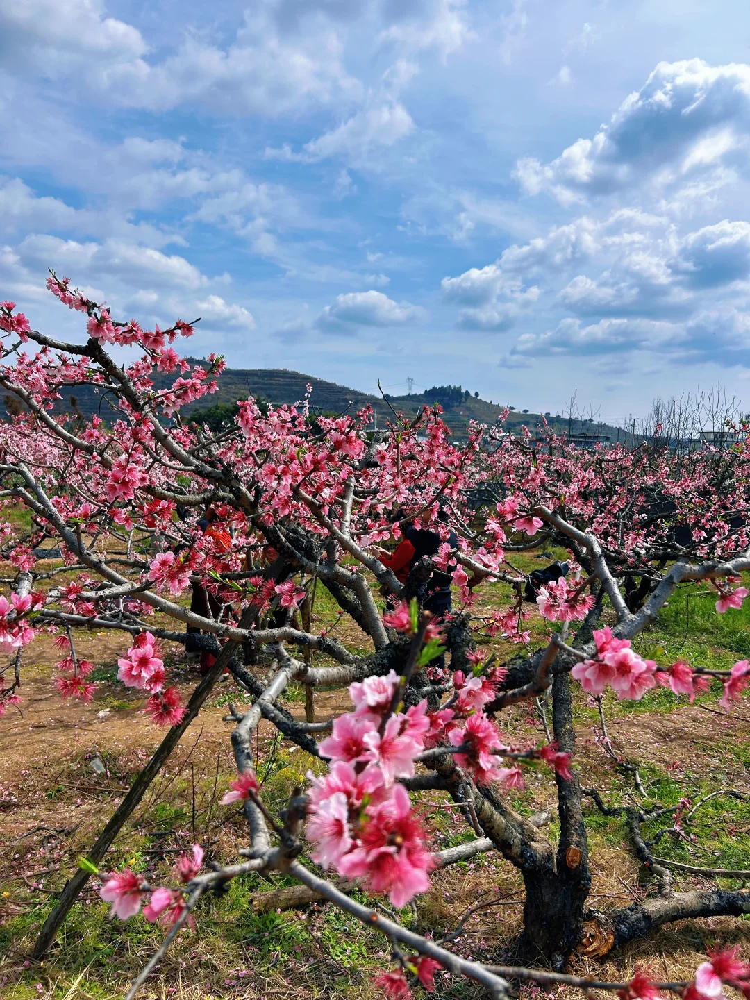
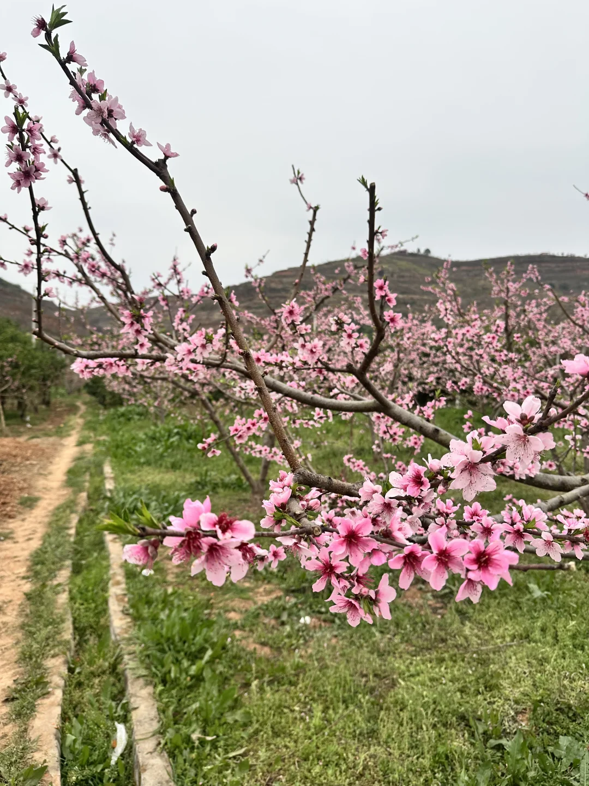
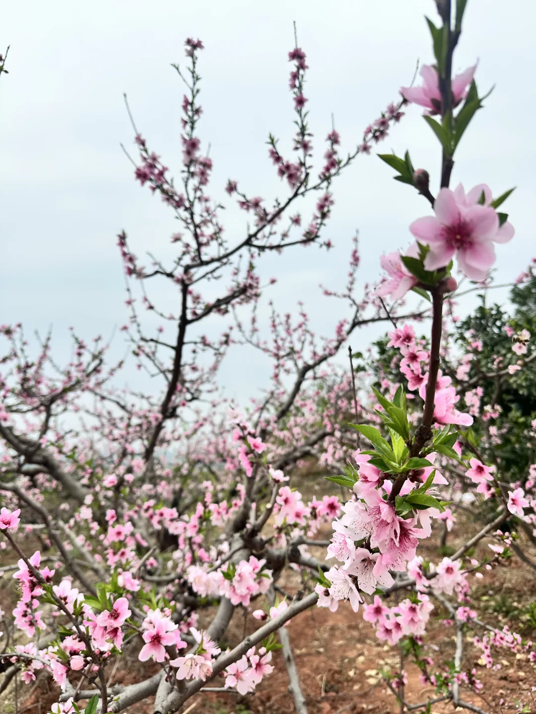

桃林大景
上午光线适合观察花海、村落与田野的层次。

连山镇有延续多年的桃树种植传统，桃花会把赏花、乡村演艺与农产品连接起来。桃林、村庄和餐桌共同构成这条路线，不宜把它压缩成一个匆忙拍照点。
花期通常集中在春季，但盛放时间每年都会随温度和降雨变化。页面不承诺固定日期，出发前应查询当年公告、天气和实时路况。
上午光线适合观察花海、村落与田野的层次。
周末和活动期人流集中，尽量早到并遵守现场交通组织。
赏花后可衔接连山回锅肉或乡村餐饮，营业信息需临行核验。
桃、李、柚等产业让连山不只有花期，但采摘安排以经营方公告为准。
图片记录的是盛花景象，不代表到访当天状态；请在出发前结合当年公告、近期天气与现场信息判断。

从远景判断桃林、村落与道路的空间关系。

只走现场标示的通行路径，不踏入种植带或折取花枝。

近距离观察花瓣与枝条，不把照片中的状态当作固定花期。

赏花后再衔接连山餐饮；营业与等位情况请临行核验。
花期、桃花会活动、交通管制与农家乐营业均受天气和当年安排影响。 本页不提供实时客流、班次或余票承诺。